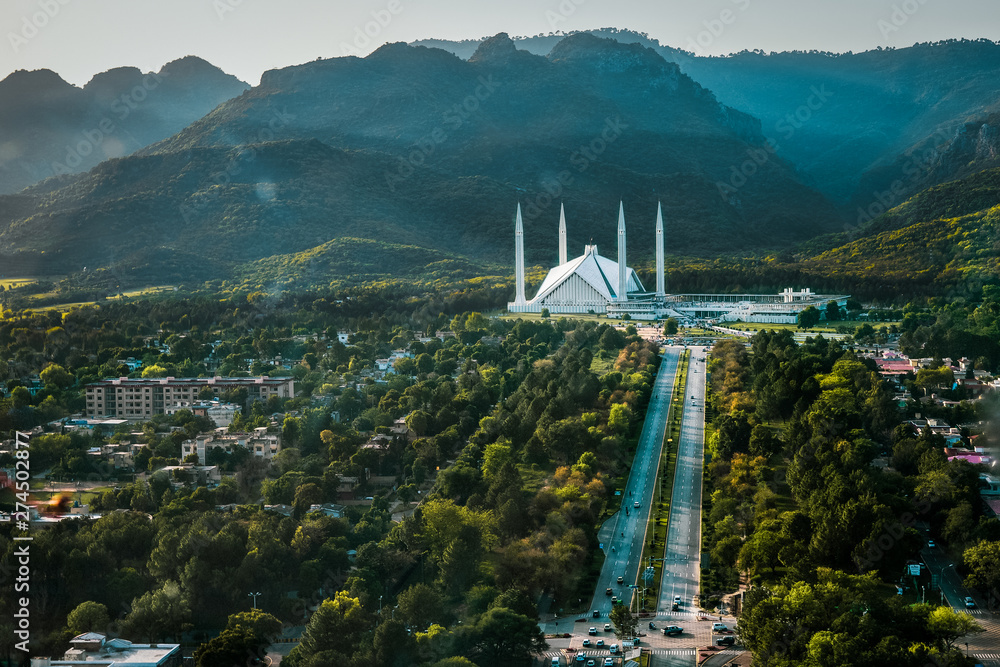

This company is provided a Small and Large tour also providing a
great facilaties in tour.Our tours is different someone tour because
this tours is more thrill and advantures.Our tours are full of fun,enjoy a
differnet places.company tours guider are best.and also provided a choose
your own facilaties.
So Try Our Comapany Tours
Pakistan

About
From the mighty stretches of the Karakorams in the North to the vast alluvial delta of the Indus River in the South, Pakistan remains a land of high adventure and nature. Trekking, mountaineering, white water rafting, wild boar hunting, mountain and desert jeep safaris, camel and yak safaris, trout fishing and bird watching, are a few activities, which entice the adventure and nature lovers to Pakistan
Pakistan is endowed with a rich and varied flora and fauna. High Himalayas, Karakoram and the Hindukush ranges with their alpine meadows and permanent snow line, coniferous forests down the sub-mountain scrub, the vast Indus plain merging into the great desert, the coast line and wetlands, all offer a remarkably rich variety of vegetation and associated wildlife including avifauna, both endemic and migratory. Ten of 18 mammalian orders are represented in Pakistan with species ranging from the world's smallest surviving mammals, the Mediterranean Pigmy Shrew, to the largest mammal ever known; the blue whale Pakistan
Provinces:
Pakistan is full of beautiful places with rich costum and culture.Below you see a provinces in Pakistan.